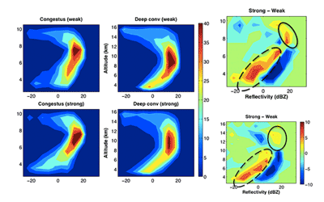

RESEARCH
Nexrad Project (2016 - Present)
Extratropical cyclones (ETC) are the most common cause of extreme precipitation in mid-latitudes. Vertical motion within an ETC can be driven by isentropic lifting, upright convection and slantwise convection. These different mechanisms can deliver different rain rates, might respond differently to global warming, and the profile of condensational heating associated with these different pathways impact the storms differently. In this project we compare different metrics for identifying convection within the ETCs and calculate the relative contribution of convection to total ETC precipitation. We also determine if convection occurs preferentially in specific regions of the storm and decide how to best utilize GPM retrievals covering other parts of the mid-latitudes.

SWE Algorithm (2013 - Present)
Snow is a key element of the water and energy cycles and the knowledge of spatio-temporal distribution of snow depth and snow water equivalent (SWE) is fundamental for hydrological and climatological applications. In this project, we develop a new operational algorithm applied to historical AMSR-E data. The new algorithm here proposed makes use of climatological data, electromagnetic modeling and artificial neural networks for estimating snow depth as well as a spatio-temporal dynamic density scheme to convert snow depth to SWE. The outputs of the new algorithm are compared with those of the current AMSR-E operational algorithm as well as in-situ measurements and other operational snow products, specifically the Canadian Meteorological Center (CMC) and GlobSnow datasets. Our results show that the AMSR-E algorithm here proposed generally performs better than the operational one and addresses some major issues identified in the spatial distribution of snow depth fields associated with the evolution of effective grain size.
